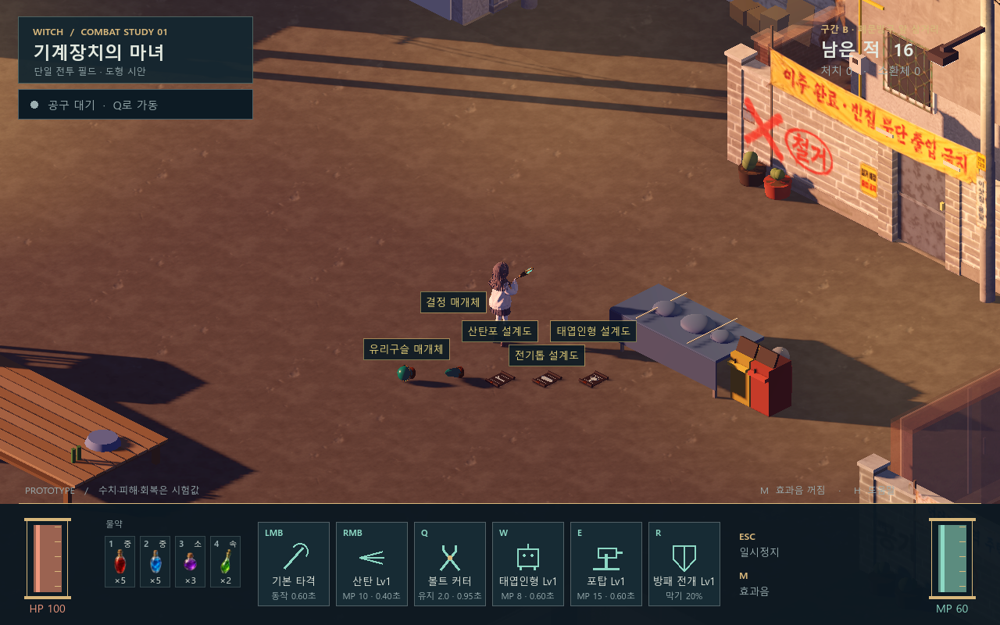

전리품 모델 · 전체 39종
장비 22종 · 물약 13종 · 각인전과 이름 조각 4종. 기존에 선택한 4종을 보존하고 나머지 35종을 추가했습니다.
새 모델 35종새 모델당 1메시 · 최대 3재질기존 낙하·클릭 획득 유지
실제 골목에서 보기
기본 크기는 현재 게임의 1.75배 카메라입니다. 확대는 같은 시점·조명의 2.7배이며, 적은 비교 화면 밖으로 옮겼습니다.

인벤토리 그림과 모델 비교
왼쪽은 기존 인벤토리 그림, 오른쪽은 게임에서 촬영한 바닥 모델입니다. 모델을 누르면 큰 원본을 볼 수 있습니다. 착용용 캐릭터 파츠가 아닌 바닥 전리품입니다.
무명 덧옷기존 v1 보존
cotton_coat · 1,556 tris누빈 망토신규
quilted_cape · 1,056 tris면장갑신규
cotton_gloves · 2,856 tris가죽 작업장갑신규
work_gloves · 3,984 tris운동화신규
sneakers · 4,680 tris가죽 장화신규
leather_boots · 5,128 tris체력 물약 (소)기존 v1 보존
health_s · 1,964 tris체력 물약 (중)신규
health_m · 1,188 tris체력 물약 (대)신규
health_l · 1,308 tris체력 완전 회복신규
full_health · 1,172 tris리본 머리끈신규
ribbon_tie · 740 tris별장식 머리핀신규
star_pin · 1,740 tris놋쇠 브로치신규
brass_brooch · 2,796 tris은 세공 브로치신규
silver_brooch · 2,756 tris구리 반지기존 v1 보존
copper_ring · 1,660 tris은반지신규
silver_ring · 1,076 tris절삭 부품기존 v1 보존
part_cutting · 4,956 tris탄도 부품신규
part_ballistic · 2,400 tris동력 부품신규
part_power · 3,248 tris집행자의 도르래신규
executioner_pulley · 3,256 tris자기복제 태엽신규
self_replicating_spring · 6,368 tris마나 물약 (소)신규
mana_s · 1,284 tris마나 물약 (중)신규
mana_m · 1,188 tris마나 물약 (대)신규
mana_l · 1,308 tris마나 완전 회복신규
full_mana · 1,172 tris유리구슬 매개체신규
glass_orb · 1,376 tris결정 매개체신규
crystal_core · 416 tris산탄포 설계도신규
bp_shotgun · 2,236 tris전기톱 설계도신규
bp_chainsaw · 3,036 tris태엽인형 설계도신규
bp_automaton · 3,272 tris회복 물약 (소)신규
rejuv_s · 1,284 tris회복 물약 (중)신규
rejuv_m · 1,188 tris회복 물약 (대)신규
rejuv_l · 1,308 tris완전 회복신규
full_rejuv · 1,172 tris이동 속도 물약신규
speed · 960 tris각인전신규
currency · 3,012 tris「벨」 조각신규
bel · 296 tris「록」 조각신규
rok · 516 tris「샤」 조각신규
sha · 356 tris전체 모델·편집 원본과 검증
게임 모델 전체 표 · Blender 제작본 · 와이어 검사 · 검증 기록 · 제작·인계 안내
반투명 유리 대신 불투명 색과 하이라이트로 구분합니다. 기존 고정 낙하 연출을 사용하며 임의 벽·계단 충돌이나 대량 드롭 성능을 새로 보증하지 않습니다. 중형·대형 물약은 기본 시점에서 단계별 크기가 커지는지 확인했습니다.